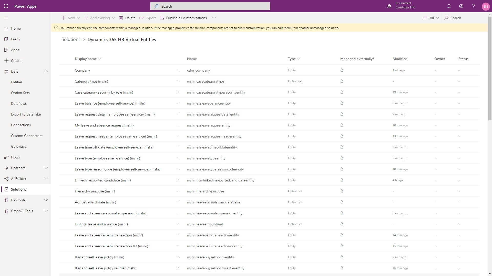
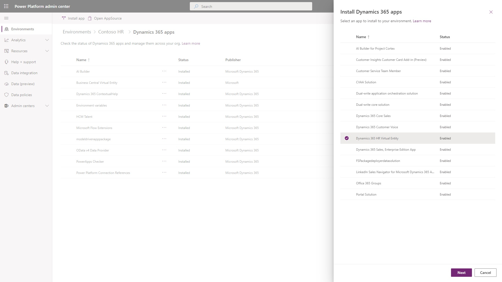
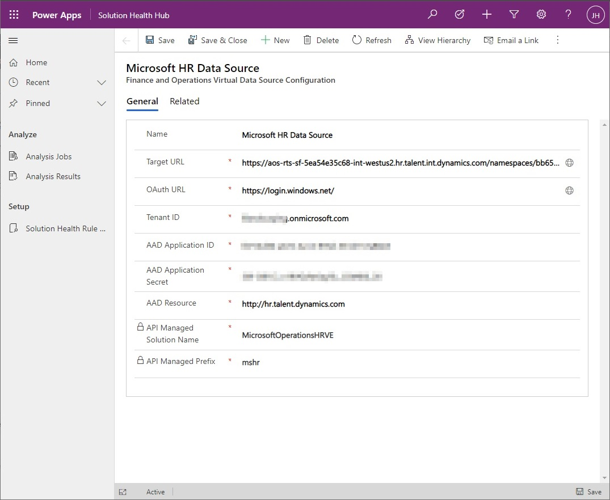
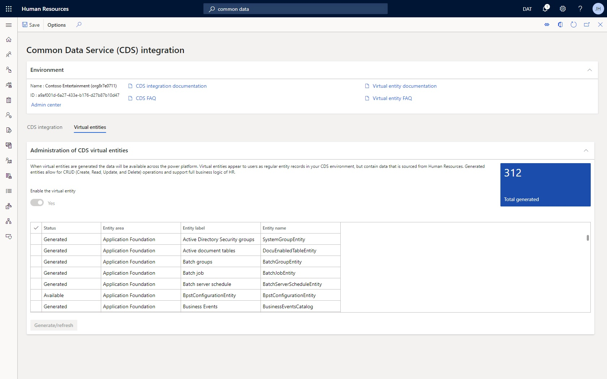

Konfigurieren von Common Data Service virtuellen Entitäten
[!include[rename-banner](~/includes/cc-data-platform-banner.md)]Dynamics 365 Human Resources ist eine virtuelle Datenquelle in Common Data Service. Es bietet vollständige CRUD-Vorgänge zum Erstellen, Lesen, Aktualisieren und Löschen von Common Data Service und Microsoft Power Platform. Die Daten für virtuelle Entitäten werden nicht in Common Data Service gespeichert, aber in der Anwendungsdatenbank.
Um CRUD-Vorgänge für Human Resources-Entitäten von Common Data Service zu aktivieren, müssen Sie die Entitäten als virtuelle Entitäten in Common Data Service verfügbar machen. Auf diese Weise können Sie CRUD-Vorgänge von Common Data Service und Microsoft Power Platform auf Daten ausführen, die sich in Human Resources befinden. Die Vorgänge unterstützen auch die vollständige Überprüfung der Geschäftslogik von Human Resources, um die Datenintegrität beim Schreiben von Daten in die Entitäten sicherzustellen.
Verfügbare virtuelle Einheiten für Human Resources
Alle Open Data Protocol (OData)-Entitäten in Human Resources sind als virtuelle Entitäten in Common Data Service verfügbar. Sie sind auch in Power Platform verfügbar. Sie können jetzt Apps und Erfahrungen mit Daten direkt aus Human Resources mit voller CRUD-Fähigkeit erstellen, ohne Daten nach Common Data Service kopieren oder synchronisieren zu müssen. Sie können Power Apps-Portale zum Erstellen von nach außen gerichteten Websites, die Kollaborationsszenarien für Geschäftsprozesse in Human Resources ermöglichen, verwenden.
Sie können die Liste der in der Umgebung aktivierten virtuellen Entitäten anzeigen und mit den Entitäten in Power Apps in der Lösung Virtuelle Entitäten von Dynamics 365 HR arbeiten.

Virtuelle Entitäten versus natürliche Entitäten
Virtuelle Einheiten für Human Resources sind nicht die gleichen wie die natürlichen Common Data Service-Entitäten, die für Human Resources erstellt wurden. Die natürlichen Entitäten für Human Resources werden separat generiert und in der HCM Common-Lösung in Common Data Service verwaltet. Bei natürlichen Entitäten werden die Daten in Common Data Service gespeichert und erfordern eine Synchronisation mit der Anwendungsdatenbank von Human Resources.
Note
Eine Liste der natürlichen Common Data Service-Entitäten für Human Resources ist verfügbar unter Common Data Service Entitäten.
Einrichtung
Befolgen Sie diese Einrichtungsschritte, um virtuelle Entitäten in Ihrer Umgebung zu aktivieren.
Virtuelle Entitäten in Human Resources aktivieren
Zunächst müssen Sie virtuelle Entitäten im Arbeitsplatz Funktionsverwaltung aktivieren.
Wählen Sie in Human Resources Systemverwaltung aus.
Wählen Sie die Kachel Funktionsverwaltung.
Wählen Sie Support für virtuelle Entitäten in HR/CDS und dann Aktivieren.
Weitere Informationen zum Aktivieren und Deaktivieren von Funktionen finden Sie unter Funktionen verwalten.
Registrieren Sie die App in Microsoft Azure
Zunächst müssen Sie Ihre Human Resources-Instanz im Azure-Portal registrieren, damit die Microsoft-Identitätsplattform Authentifizierungs- und Autorisierungsdienste für die App und die Benutzer bereitstellen kann. Weitere Informationen zum Registrieren von Apps in Azure finden Sie unter Schnellstart: Registrieren Sie eine Anwendung bei der Microsoft-Identitätsplattform.
Öffnen Sie das Microsoft Azure-Portal.
Wählen Sie in der Liste der Azure-Dienstleistungen die Option App-Registrierungen aus.
Wählen Sie Neue Registrierung aus.
Geben Sie im Feld Name einen aussagekräftigen Namen für die App ein. Beispielsweise, Dynamics 365 Human Resources Virtuelle Entitäten.
Geben Sie im Feld URI umleiten die Namespace-URL Ihrer Instanz in Human Resources ein.
Wählen Sie Registrieren aus.
Nach Abschluss der Registrierung zeigt das Azure-Portal den Bereich Überblick der App-Registrierung an, der dessen Anwendungs-ID (Client-ID) enthält. Beachten Sie die Anwendungs-ID (Client-ID) zu diesem Zeitpunkt. Sie geben diese Informationen ein, wenn Sie Konfigurieren der Datenquelle der virtuellen Entität.
Wählen Sie im linken Navigationsbereich Zertifikate und Geheimnisse aus.
In dem Abschnitt Kundengeheimnisse der Seite wählen Sie Neues Kundengeheimnis aus.
Geben Sie eine Beschreibung ein, wählen Sie eine Dauer aus und wählen Sie Hinzufügen.
Erfassen Sie den Wert des Geheimnisses. Sie geben diese Informationen ein, wenn Sie Konfigurieren der Datenquelle der virtuellen Entität.
Important
Beachten Sie zu diesem Zeitpunkt unbedingt den Wert des Geheimnisses. Das Geheimnis wird nie wieder angezeigt, nachdem Sie diese Seite verlassen haben.
Installieren Sie die Dynamics 365 HR Virtual Entity-App
Installieren Sie die Dynamics 365 HR Virtual Entity-App in Ihrer Power Apps-Umgebung, um das Lösungspaket für virtuelle Entitäten für Common Data Service bereitzustellen.
Öffnen Sie das Power Platform Admin Center.
In der Liste Umgebungen wählen Sie die Power Apps-Umgebung, die Ihrer Human Resources-Instanz zugeordnet ist.
In dem Abschnitt Ressourcen der Seite wählen Sie Dynamics 365-Apps.
Wählen Sie die Aktion App installieren aus.
Wählen Sie Dynamics 365 HR Virtuelle Entität und dann Weiter.
Überprüfen und markieren Sie, um den Vertragsbedingungen zuzustimmen.
Wählen Sie Installieren.
Die Installation dauert einige Minuten. Fahren Sie nach Abschluss mit den nächsten Schritten fort.

Konfigurieren Sie die Datenquelle der virtuellen Entität
Der nächste Schritt besteht darin, die Datenquelle der virtuellen Entität in der Power Apps-Umgebung zu konfigurieren.
Öffnen Sie das Power Platform Admin Center.
In der Liste Umgebungen wählen Sie die Power Apps-Umgebung, die Ihrer Human Resources-Instanz zugeordnet ist.
Wählen Sie die Umgebungs-URL im Abschnitt Details der Seite aus.
Im Lösungsintegrität-Hub wählen Sie das Symbol Erweiterte Suche oben rechts auf der Anwendungsseite aus.
Wählen Sie auf der Seite Erweiterte Suche in der Dropdown-Liste Suchen Finance and Operations Konfigurationen virtueller Datenquellen aus.
Wählen Sie Ergebnisse aus.
Wählen Sie den Datensatz Microsoft HR-Datenquelle.
Geben Sie die erforderlichen Informationen für die Datenquellenkonfiguration ein:
Ziel-URL: Die URL Ihres Human Resources-Namespace. Das Format der Ziel-URL sieht wie folgt aus:
https://<hostname>.hr.talent.dynamics.com/namespaces/<namespaceID>/
Beispiel:
https://aos.rts-sf-5ea54e35c68-westus2.hr.talent.dynamics.com/namespaces/49d24c565-8f4d-4891-b174-bf83d948ed0c/Note
Vergessen Sie das „/“-Zeichen am Ende der URL nicht, um einen Fehler zu vermeiden.
Mandanten-ID: Die Azure Active Directory (Azure AD)-Mandanten-ID.
AAD-Anwendungs-ID: Die Anwendungs-ID (Client-ID), die für die im Microsoft Azure-Portal registrierte Anwendung erstellt wurde. Sie haben diese Informationen früher während des Schritts Registrieren Sie die App in Microsoft Azure erhalten.
AAD-Anwendungs-Geheimnis: Das Kundengeheimnis, das für die im Microsoft Azure-Portal registrierte Anwendung erstellt wurde. Sie haben diese Informationen früher während des Schritts Registrieren Sie die App in Microsoft Azure erhalten.

Wählen Sie Speichern & Schließen aus.
App-Berechtigungen in Human Resources erteilen
Erteilen Sie Berechtigungen für die beiden Azure AD-Anwendungen in Human Resources:
- Die für Ihren Mandanten im Microsoft Azure-Portal erstellte App
- Die Dynamics 365 HR Virtual Entity-App installiert in der Power Apps-Umgebung
Öffnen Sie in Human Resources die Seite Azure Active Directory-Anwendungen.
Wählen Sie Neu aus, um einen neuen Anwendungsdatensatz zu erstellen:
- Geben Sie im Feld Client-ID die Client-ID der App ein, die Sie im Microsoft Azure-Portal registriert haben.
- Geben Sie im Feld Name den Namen der App ein, die Sie im Microsoft Azure-Portal registriert haben.
- Wählen Sie im Feld Benutzer-ID die Benutzer-ID eines Benutzers mit Administratorrechten in Human Resources und der Power Apps-Umgebung aus.
Wählen Sie Neu aus, um einen zweiten Anwendungsdatensatz zu erstellen:
- Client-ID: f9be0c49-aa22-4ec6-911a-c5da515226ff
- Name: Dynamics 365 HR Virtual Entity
- Wählen Sie im Feld Benutzer-ID die Benutzer-ID eines Benutzers mit Administratorrechten in Human Resources und der Power Apps-Umgebung aus.
Erstellen virtueller Entitäten
Nach Abschluss des Setups können Sie die virtuellen Entitäten auswählen, die Sie generieren und in Ihrer Common Data Service-Instanz aktivieren möchten.
Öffnen Sie in Human Resources die Seite Common Data Service (CDS) Integartion.
Wählen Sie die Registerkarte Virtuelle Entitäten.
Note
Die Umschaltung Aktivieren Sie die virtuelle Entität wird automatisch auf Ja gesetzt, wenn alle erforderlichen Einstellungen abgeschlossen sind. Wenn der Schalter auf Nein eingestellt ist, überprüfen Sie die Schritte in den vorherigen Abschnitten dieses Dokuments, um sicherzustellen, dass alle erforderlichen Einstellungen abgeschlossen sind.
Wählen Sie die Entität oder Entitäten aus, die Sie in Common Data Service generieren möchten.
Wählen Sie Generieren/Aktualisieren.

Überprüfen Sie den Status der Entitätsgenerierung
Virtuelle Entitäten werden in Common Data Service durch einen asynchronen Hintergrundprozess generiert. Aktualisierungen der Prozessanzeige im Action Center. Details zum Prozess, einschließlich Fehlerprotokollen, werden in der Seite Prozessautomatisierung angezeigt.
Öffnen Sie in Human Resources die Listenseite Prozessautomatisierung.
Wählen Sie die Registerkarte Hintergrundprozesse.
Wählen Sie Hintergrundprozess für asynchrone Operationen einer virtuellen Entität.
Wählen Sie Aktuelle Ergebnisse anzeigen.
Im Slideout-Bereich werden die neuesten Ausführungsergebnisse für den Prozess angezeigt. Sie können das Protokoll für den Prozess anzeigen, einschließlich aller von Common Data Service zurückgegebener Fehler.
Siehe auch
Was ist Common Data Service?
Entitätsübersicht
Übersicht über Entitätsbeziehungen
Erstellen und bearbeiten Sie virtuelle Entitäten, die Daten aus einer externen Datenquelle enthalten
Was sind Power Apps-Portale?
Übersicht über das Erstellen von Apps in Power Apps